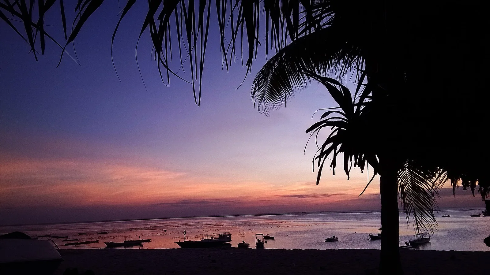

Nemberala — T-Land
Rote, Indonésie · surf

Village de pêcheurs et d’algoculteurs au sud-ouest de Rote, l’île la plus méridionale d’Indonésie. Au large, la gauche de récif T-Land déroule longuement quand la houle australe rentre, surtout en saison sèche.
- Lieu
- Rote, Indonésie
- Niveau
- Intermédiaire
- Activités
- surf
- Type d'eau
- Mer / océan
- Coordonnées
- -10.89, 122.82 (position approximative du secteur)
Dangers à connaître
- Récif corallien peu profond, surtout à marée basse.
- Île isolée : soins médicaux limités, évacuation longue.
Le conseil d'Ocean Buddy
Le pic se rejoint à la rame ou en bateau selon la marée : demande conseil aux surfeurs du village avant ta première session.
Ouvrir dans Ocean Buddy Télécharger sur l'App Store
Source : Fiche Ocean Buddy · septembre 2026 · à vérifier localement.